Το σύστημα καλύπτει όλες τις λειτουργίες ενός χώρου στάθμευσης: από τη στιγμή που ο πελάτης κάνει την κράτησή του, μέχρι τη στιγμή που παραλαμβάνει το αυτοκίνητό του, πληρώνει και φεύγει. Παράλληλα, κρατά ταμείο ανά υπάλληλο, εκδίδει αποδείξεις και παράγει τις αναφορές κλεισίματος ταμείου.
Το σύστημα χωρίζεται σε δύο μεγάλα κομμάτια:
Σελίδα Επισκεπτών(Guest Page): Η σελίδα που βλέπει ο απλός επισκέπτης για να κλείσει θέση πάρκινγκ, χωρίς να χρειάζεται λογαριασμό.
Εφαρμογή Διαχείρισης: Εκεί μπαίνει, μετά τη σύνδεση, το προσωπικό (για κρατήσεις, ταμείο, πελάτες, αναφορές και ρυθμίσεις), αλλά και ο εγγεγραμμένος πελάτης, για να δει και να διαχειριστεί τις δικές του κρατήσεις.
Οι ρόλοι χρηστών
Μέσα στο σύστημα υπάρχουν τέσσερις ρόλοι. Ο ρόλος καθορίζεται από τον λογαριασμό με τον οποίο συνδέεται κανείς και αποφασίζει αυτόματα τι βλέπει και τι μπορεί να κάνει.
Ρόλος
Τι βλέπει & τι μπορεί να κάνει
Διαχειριστήςadmin
Έχει πρόσβαση σε όλα: κρατήσεις, dashboard, αναφορές, πελάτες, οδηγούς και ρυθμίσεις συστήματος. Μπορεί να δώσει εκπτώσεις, να αλλάξει ποσά είσπραξης και να δημιουργήσει Αναφορά Z (κλείσιμο ταμείου).
Οδηγόςdriver
Ο υπάλληλος του χώρου. Βλέπει όλες τις κρατήσεις, κάνει check-in / check-out, εισπράττει πληρωμές, τυπώνει ή στέλνει αποδείξεις και βλέπει την Αναφορά X της δικής του βάρδιας. Δεν μπορεί να αλλάξει τα ποσά είσπραξης ή να δώσει έκπτωση. Δεν βλέπει dashboard, αναφορές, πελάτες και οδηγούς.
Χρήστηςuser
Ο εγγεγραμμένος πελάτης. Βλέπει μόνο τις δικές του κρατήσεις, κατεβάζει τις αποδείξεις του, διαχειρίζεται το προφίλ και τα αποθηκευμένα οχήματά του.
Επισκέπτηςguest
Δεν έχει λογαριασμό. Κάνει κράτηση από τη φόρμα επισκέπτη, χωρίς σύνδεση.
Σημείωση Σε όλο το εγχειρίδιο, όπου μια λειτουργία αφορά μόνο συγκεκριμένο ρόλο, ο ρόλος σημειώνεται με χρωματιστή ετικέτα δίπλα στον τίτλο, όπως στον πίνακα.
Βασικές έννοιες
Πριν προχωρήσετε, αξίζει να γνωρίζετε μερικούς όρους που θα συναντήσετε παντού:
Κωδικός κράτησης(Booking Reference): Κάθε κράτηση παίρνει έναν αναγνώσιμο κωδικό, π.χ. PT-260917-00023. Τα ψηφία 260917 είναι η ημερομηνία δημιουργίας (17/09/2026) και το 00023 ένας αύξων αριθμός. Με αυτόν τον κωδικό αναζητείτε γρήγορα μια κράτηση και τον βλέπετε σε αποδείξεις και αναφορές.
Κατάσταση κράτησης(Status): Κάθε κράτηση είναι σε μία από τρεις καταστάσεις: Created (δημιουργήθηκε), Parked (το όχημα είναι στον χώρο) και Completed (το όχημα παραδόθηκε).
Βάρδια(Shift): Το διάστημα εργασίας ενός υπαλλήλου. Κάθε είσπραξη καταγράφεται στη βάρδια του υπαλλήλου που την έκανε (βλ. Κεφάλαιο 6).
Αναφορά X: Ζωντανή εικόνα του ταμείου των ανοιχτών βαρδιών, χωρίς να κλείνει τίποτα.
Αναφορά Z: Το οριστικό κλείσιμο ταμείου για όλες τις βάρδιες που έχουν κλείσει.
Τιμή TBC: Όταν δεν είναι γνωστή η ημερομηνία επιστροφής, η τιμή εμφανίζεται ως «TBC» (to be confirmed) και υπολογίζεται αυτόματα στο check-out.
Πλοήγηση στην εφαρμογή
Αριστερό μενού: Οι βασικές ενότητες (Home, Bookings, Customers, Reports, Drivers). Κάθε ρόλος βλέπει μόνο τις ενότητες που τον αφορούν. Το κουμπί Collapse στο κάτω μέρος μαζεύει το μενού, ώστε να μένει περισσότερος χώρος για τους πίνακες.
Πάνω μπάρα: Δεξιά φαίνεται το όνομα του συνδεδεμένου χρήστη και το εικονίδιο αποσύνδεσης.
Τηλέφωνα: Όπου εμφανίζεται αριθμός τηλεφώνου πελάτη, μπορείτε να τον πατήσετε από κινητό ή tablet για να καλέσετε απευθείας.
Εξαγωγές: Οι περισσότερες λίστες και αναφορές εξάγονται σε PDF και Excel.
2. Κράτηση ως Επισκέπτης guest
Ο υποψήφιος πελάτης μπαίνει στην αρχική σελίδα και έχει δύο επιλογές: να συνεχίσει ως επισκέπτης, ή να συνδεθεί στον λογαριασμό του.
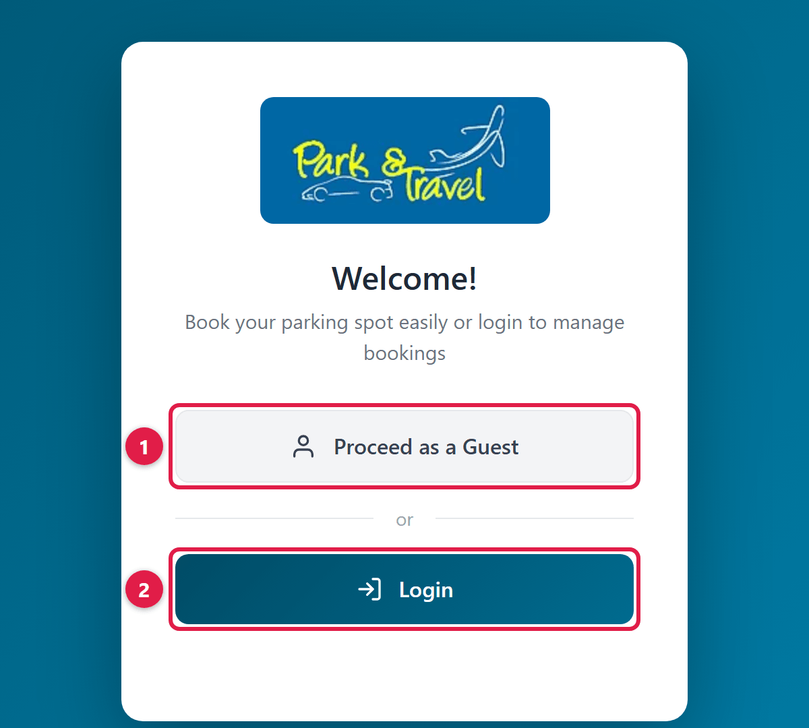
Εικόνα 1: Η αρχική σελίδα του συστήματος
1Proceed as a Guest: Κράτηση χωρίς λογαριασμό.
2Login: Σύνδεση για εγγεγραμμένους πελάτες και για το προσωπικό.
Σημείωση Αν ο διαχειριστής απενεργοποιήσει την κράτηση ως επισκέπτης (Ρυθμίσεις → Guest Booking), το κουμπί «Proceed as a Guest» δεν εμφανίζεται και η φόρμα επισκέπτη δεν είναι προσβάσιμη.
Η φόρμα κράτησης
Η φόρμα είναι χωρισμένη σε τρία μέρη: προσωπικά στοιχεία, στοιχεία οχήματος και λεπτομέρειες κράτησης. Τα πεδία με αστερίσκο (*) είναι υποχρεωτικά.
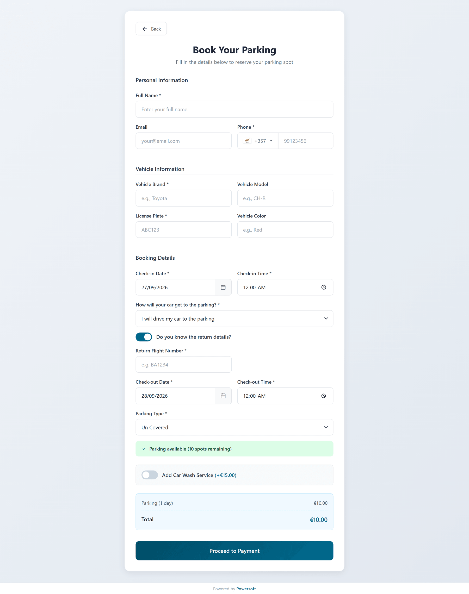
Εικόνα 2: Η φόρμα κράτησης επισκέπτη
Προσωπικά στοιχεία
Ονοματεπώνυμο, τηλέφωνο (με επιλογή χώρας) και email. Το email είναι προαιρετικό· αν δεν δοθεί, ο πελάτης απλώς δεν θα λάβει email επιβεβαίωσης και αποδείξεις με email.
Στοιχεία οχήματος
Μάρκα, μοντέλο, αριθμός εγγραφής (πινακίδα) και χρώμα, ώστε το προσωπικό να αναγνωρίσει το όχημα όταν φτάσει.
Λεπτομέρειες κράτησης
Ημερομηνία & ώρα άφιξης(Check-in): Η ώρα ξεκινά από 00:00. Οι διαθέσιμες ημερομηνίες εξαρτώνται από τη ρύθμιση «Booking Lead Time» (πόσες ημέρες νωρίτερα πρέπει να γίνει η κράτηση).
Πώς θα φτάσει το όχημα στο πάρκινγκ: Είτε ο πελάτης το οδηγεί ο ίδιος στον χώρο, είτε το παραλαμβάνει το προσωπικό στο αεροδρόμιο (με επιπλέον χρέωση παράδοσης). Ο τρόπος επιστροφής ακολουθεί αυτόματα την ίδια επιλογή.
«Do you know the return details?»: Διακόπτης για τα στοιχεία επιστροφής. Όταν είναι ενεργός, ζητούνται αριθμός πτήσης επιστροφής, ημερομηνία και ώρα check-out. Αν ο πελάτης δεν τα γνωρίζει, τον απενεργοποιεί και η τιμή εμφανίζεται ως TBC.
Τύπος πάρκινγκ: Καλυμμένο ή ακάλυπτο, με έλεγχο διαθεσιμότητας σε πραγματικό χρόνο. Αν δεν υπάρχουν θέσεις για τις ημερομηνίες αυτές, το σύστημα δεν επιτρέπει να συνεχίσει.
Πλύσιμο αυτοκινήτου(Car Wash): Προαιρετική υπηρεσία, με το κόστος να προστίθεται αμέσως στο σύνολο.
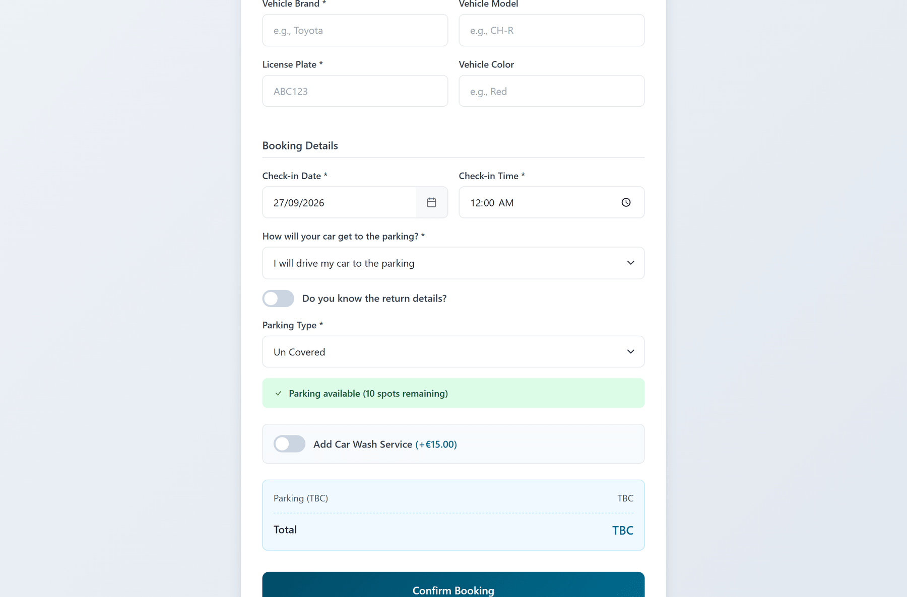
Εικόνα 3: Χωρίς στοιχεία επιστροφής, η τιμή εμφανίζεται ως TBC
Σημείωση Κράτηση με τιμή TBC δεν πληρώνεται εκ των προτέρων και δεν εισπράττεται στο check-in. Η τελική τιμή υπολογίζεται αυτόματα τη στιγμή του check-out, από την ημέρα άφιξης μέχρι εκείνη την ημέρα (βλ. Κεφάλαιο 4, «Check-out χωρίς στοιχεία επιστροφής»).
Ολοκλήρωση & πληρωμή
Αν δεν απαιτείται προπληρωμή, ή αν η τιμή είναι TBC, ο επισκέπτης πατά Confirm Booking και η κράτηση καταχωρείται αμέσως.
Αν η προπληρωμή είναι υποχρεωτική (Ρυθμίσεις → Payment), το κουμπί γίνεται Proceed to Payment. Ο επισκέπτης μεταφέρεται στη σελίδα πληρωμής της VPayments (Wallee) και η κράτηση δημιουργείται μόνο αν η πληρωμή ολοκληρωθεί. Αν αποτύχει ή ακυρωθεί, δεν δημιουργείται κράτηση.
Μετά την επιτυχή κράτηση εμφανίζεται σελίδα επιτυχίας και αποστέλλεται email επιβεβαίωσης (εφόσον δόθηκε email). Σε αποτυχία πληρωμής, αντίστοιχη σελίδα ενημερώνει τον επισκέπτη ώστε να προσπαθήσει ξανά.
3. Σύνδεση & Προφίλ Χρήστη
Σύνδεση
Η σύνδεση γίνεται από το κουμπί Login της αρχικής σελίδας, μέσω ενός ασφαλούς εξωτερικού συστήματος ταυτοποίησης (Auth0). Ο ρόλος του λογαριασμού καθορίζει αυτόματα τι θα δει ο χρήστης μόλις μπει.
Σημείωση Για το προσωπικό (διαχειριστές & οδηγούς), η είσοδος στην εφαρμογή ανοίγει αυτόματα βάρδια, αν δεν υπάρχει ήδη ανοιχτή. Δείτε το Κεφάλαιο 6.
Οι κρατήσεις μου user
Ο εγγεγραμμένος πελάτης βλέπει στη σελίδα Bookings μόνο τις δικές του κρατήσεις:
Upcoming Bookings: Κάρτες με τις επερχόμενες κρατήσεις του.
Past 10 Bookings: Κάρτες με τις δέκα πιο πρόσφατες ολοκληρωμένες κρατήσεις (πινακίδα, όχημα, ημερομηνία αναχώρησης, τιμή).
Αποδείξεις: Από το μενού κάθε κράτησης μπορεί να κατεβάσει σε PDF τις αποδείξεις πληρωμής του (online προπληρωμή, πληρωμή στο check-in, πληρωμή στο check-out).
Νέα κράτηση: Με το κουμπί Add Booking, με τα αποθηκευμένα του στοιχεία και οχήματα να συμπληρώνονται αυτόματα.
Προφίλ χρήστη userdriveradmin
Κάθε συνδεδεμένος χρήστης έχει σελίδα προφίλ (από το όνομά του πάνω δεξιά). Περιέχει email (δεν αλλάζει), όνομα, επώνυμο και τηλέφωνο, με το κουμπί Save Changes.
Τα οχήματά μου user
Οι πελάτες έχουν εδώ λίστα με τα αυτοκίνητά τους (μάρκα, μοντέλο, πινακίδα, χρώμα), με προσθήκη, επεξεργασία και διαγραφή. Σε κάθε νέα κράτηση απλώς επιλέγουν το όχημα από τη λίστα, αντί να ξαναγράφουν τα στοιχεία.
Σημείωση Η ενότητα «Settings» που βλέπει ο διαχειριστής δίπλα στο προφίλ του αφορά ολόκληρο το σύστημα και περιγράφεται στο Κεφάλαιο 12.
4. Διαχείριση Κρατήσεων admindriver
Η σελίδα Bookings είναι η βασική οθόνη εργασίας του προσωπικού. Εδώ βλέπετε τις κρατήσεις, κάνετε check-in και check-out, εισπράττετε πληρωμές και τυπώνετε ή στέλνετε αποδείξεις.
Η λίστα κρατήσεων
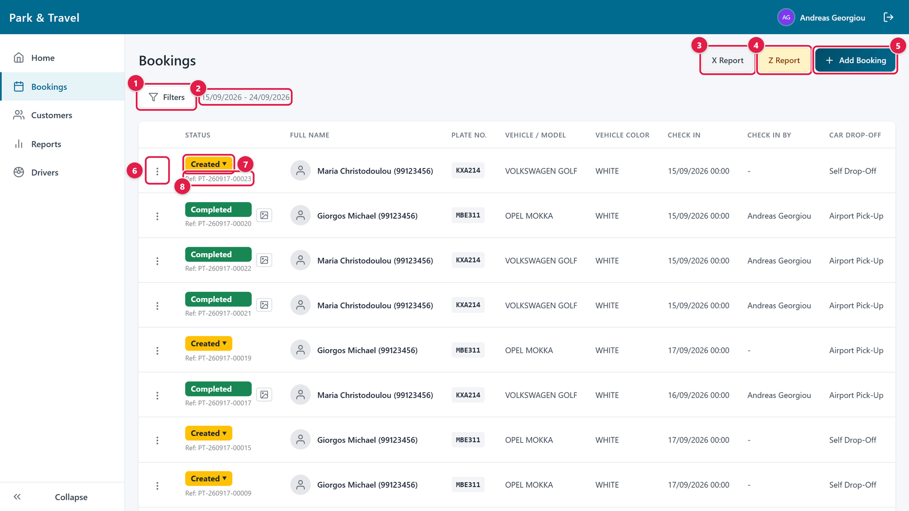
Εικόνα 4: Η σελίδα Bookings (προβολή διαχειριστή)
1Filters: Άνοιγμα του πάνελ φίλτρων και ταξινόμησης.
2Εύρος ημερομηνιών: Οι ημερομηνίες που εμφανίζονται αυτή τη στιγμή (εξ ορισμού, η σημερινή).
3X Report: Ζωντανή εικόνα ταμείου (Κεφάλαιο 7).
4Z Report: Κλείσιμο ταμείου — μόνο για διαχειριστές (Κεφάλαιο 7).
7Κατάσταση: Πατώντας την ετικέτα (π.χ. «Created ▾») αλλάζετε την κατάσταση της κράτησης.
8Κωδικός κράτησης: Ο αναγνώσιμος κωδικός (Ref) της κράτησης. Για παρκαρισμένα οχήματα φαίνεται από κάτω και η θέση στάθμευσης (π.χ. A-222).
Για κάθε κράτηση φαίνονται: κατάσταση, πελάτης (με τηλέφωνο), πινακίδα, όχημα και χρώμα, ημερομηνίες check-in / check-out, ποιος υπάλληλος έκανε check-in / check-out, τρόπος παράδοσης/παραλαβής, πτήση επιστροφής, τύπος πάρκινγκ, πλύσιμο και τιμή. Ο πίνακας κυλά οριζόντια για τις στήλες που δεν χωρούν στην οθόνη.
Η προβολή του οδηγού driver
Ο οδηγός βλέπει την ίδια λίστα, με απλούστερο μενού: μόνο την ενότητα Bookings και το κουμπί X Report (όχι Z Report, Dashboard, Customers, Reports και Drivers).
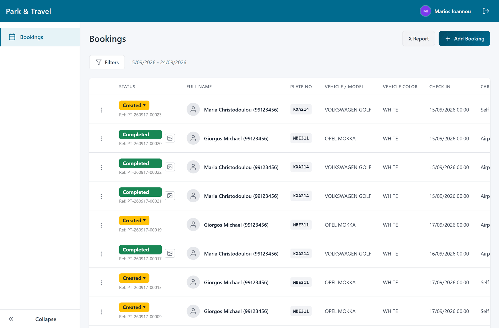
Εικόνα 5: Η σελίδα Bookings όπως τη βλέπει ο οδηγός
Δίπλα στην κατάσταση, το εικονίδιο φωτογραφίας ανοίγει τις φωτογραφίες του οχήματος που ανέβηκαν στο check-in (με ημερομηνία και ώρα λήψης), χρήσιμες σε περίπτωση αμφισβήτησης για ζημιά.
Ο πίνακας «Overstayed & Unknown Check-out»
Κάτω από την κύρια λίστα υπάρχει δεύτερος πίνακας, ανεξάρτητος από το φίλτρο ημερομηνιών. Εκεί εμφανίζονται πάντα τα παρκαρισμένα οχήματα που:
δεν έχουν ημερομηνία επιστροφής (τιμή TBC), ή
η ημερομηνία επιστροφής τους έχει ήδη περάσει (καθυστερημένη παραλαβή).
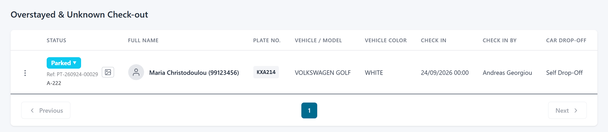
Εικόνα 6: Ο πίνακας με τα οχήματα που χρειάζονται προσοχή
Συμβουλή Ελέγχετε αυτόν τον πίνακα στην αρχή κάθε βάρδιας: δείχνει με μια ματιά ποια οχήματα έχουν ξεπεράσει την ημερομηνία τους ή δεν έχουν ορισμένη επιστροφή.
Φίλτρα & ταξινόμηση
Το κουμπί Filters ανοίγει πάνελ με όλα τα κριτήρια αναζήτησης. Μπορείτε να συνδυάσετε όσα θέλετε:
Συμβουλή Τα φίλτρα αποθηκεύονται στη διεύθυνση της σελίδας. Αν αντιγράψετε τη διεύθυνση (URL) και τη στείλετε σε συνάδελφο, θα δει ακριβώς την ίδια φιλτραρισμένη λίστα.
Σημείωση Οι εγγεγραμμένοι πελάτες βλέπουν μόνο τα φίλτρα που αφορούν τις δικές τους κρατήσεις.
Η πορεία μιας κράτησης
Created (Δημιουργήθηκε)→Parked (Παρκαρισμένο)→Completed (Ολοκληρώθηκε)
Η κατάσταση αλλάζει πατώντας την ετικέτα κατάστασης στη λίστα. Εμφανίζονται μόνο οι επιτρεπτές κινήσεις:
Τρέχουσα κατάσταση
Διαθέσιμες επιλογές
Created
Mark as Parked — check-in του οχήματος.
Parked
Mark as Completed — check-out & είσπραξη. Revert to Created — ακύρωση του check-in.
Completed
Καμία. Μια ολοκληρωμένη κράτηση δεν αλλάζει κατάσταση.
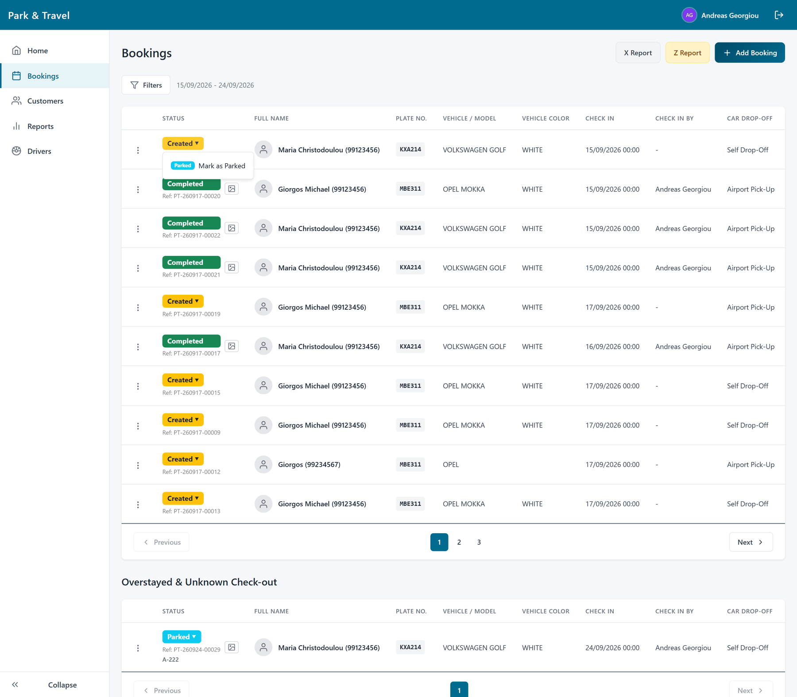
Εικόνα 8: Επιλογές για κράτηση «Created»
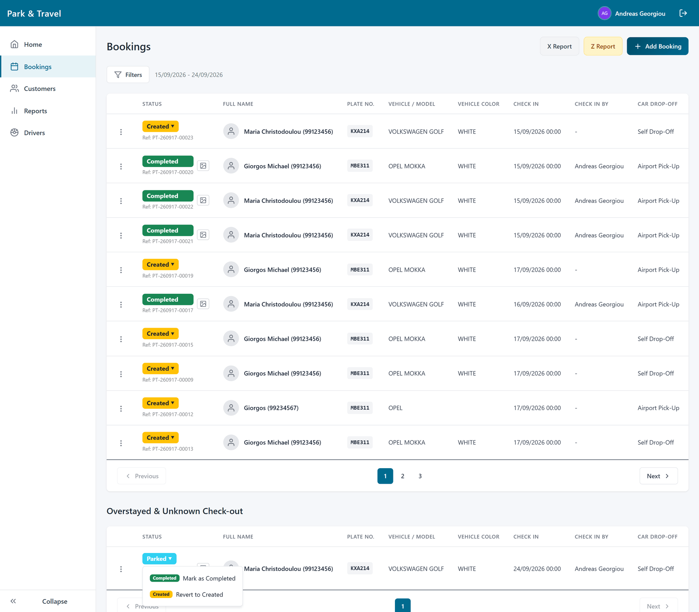
Εικόνα 9: Επιλογές για κράτηση «Parked»
Check-in: Σήμανση ως «Parked»
Όταν φτάνει το όχημα, πατήστε την ετικέτα Created ▾ και επιλέξτε Mark as Parked. Ανοίγει το παράθυρο Parked Details:
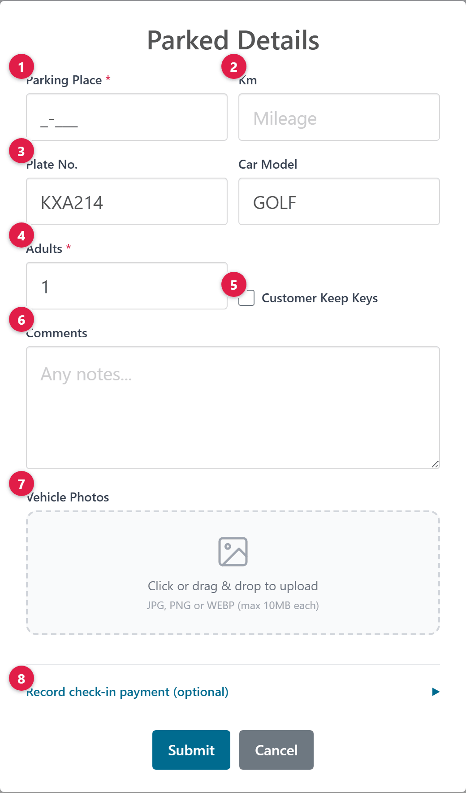
Εικόνα 10: Το παράθυρο check-in (Parked Details)
1Parking Place *: Η θέση στάθμευσης (π.χ. A-001). Το σύστημα ελέγχει ότι η θέση είναι ελεύθερη.
2Km: Τα χιλιόμετρα του οχήματος (τυπώνονται και στην ετικέτα κράτησης).
3Plate No. / Car Model: Διορθώστε τα αν διαφέρουν από την κράτηση.
4Adults *: Αριθμός επιβατών.
5Customer Keep Keys: Σημειώστε το αν ο πελάτης κρατά τα κλειδιά.
7Vehicle Photos: Φωτογραφίες του οχήματος (JPG, PNG, WEBP έως 10MB η καθεμία), αποθηκεύονται με ημερομηνία και ώρα.
8Πληρωμή στο check-in: Η ενότητα είσπραξης — δείτε αμέσως παρακάτω.
Πληρωμή στο check-in
Στο κάτω μέρος του παραθύρου υπάρχει η ενότητα πληρωμής. Η μορφή της εξαρτάται από την κράτηση:
Αν η κράτηση έχει ήδη εξοφληθεί (online ή νωρίτερα), εμφανίζεται πράσινο μήνυμα «No payment required».
Αν η τιμή είναι TBC, εμφανίζεται μήνυμα ότι δεν γίνεται είσπραξη, αφού δεν υπάρχουν στοιχεία επιστροφής.
Σε κάθε άλλη περίπτωση εμφανίζεται η ενότητα «Record check-in payment (optional)». Αν στις ρυθμίσεις είναι ενεργή η «Υποχρεωτική πληρωμή στο check-in», η ενότητα είναι ανοιχτή και υποχρεωτική για τους οδηγούς.
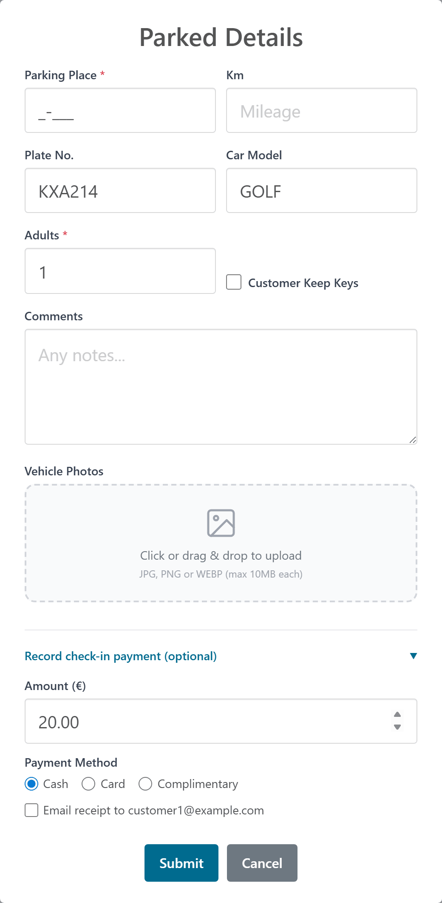
Εικόνα 11: Η ενότητα πληρωμής στο check-in (προβολή διαχειριστή)
Οδηγός
Διαχειριστής
Ποσό
Συμπληρώνεται αυτόματα με το υπόλοιπο και δεν αλλάζει.
Μπορεί να το αλλάξει.
Τρόπος πληρωμής
Cash ή Card.
Cash, Card ή Complimentary (δωρεάν).
Μικρότερο ποσό
—
Το σύστημα ρωτά: είναι έκπτωση («Yes, discount») ή το υπόλοιπο θα εισπραχθεί στο check-out («No, remainder due at checkout»);
Απόδειξη με email: Για πληρωμή με κάρτα η απόδειξη στέλνεται πάντα αυτόματα στο email του πελάτη. Για μετρητά αποφασίζετε εσείς, τσεκάροντας το «Email receipt to …».
Με το Submit η κράτηση γίνεται «Parked». Στη συνέχεια το σύστημα προσφέρει εκτύπωση της απόδειξης πληρωμής και της απόδειξης παράδοσης οχήματος (Check-in Receipt).
Check-out: Σήμανση ως «Completed»
Όταν ο πελάτης παραλαμβάνει το όχημα, πατήστε την ετικέτα Parked ▾ και επιλέξτε Mark as Completed. Το σύστημα ακολουθεί τα παρακάτω βήματα:
Βήμα 1 — Έλεγχος καθυστέρησης
Αν η παραλαβή γίνεται μετά την προγραμματισμένη ημερομηνία, το σύστημα υπολογίζει επιπλέον χρέωση για τις επιπλέον ημέρες, με βάση την κλίμακα τιμών.
Διαχειριστής: Επιλέγει Apply extra fee (εφαρμογή) ή Skip extra fee (χάρισμα). Αν τη χαρίσει, καταγράφεται στις αναφορές ως «Extra Fee Waived» για λόγους ελέγχου.
Οδηγός: Δεν ερωτάται — η επιπλέον χρέωση εφαρμόζεται πάντα.
Βήμα 2 — Είσπραξη
Ανοίγει το παράθυρο Collect Payment με το υπόλοιπο που μένει να πληρωθεί: τελική τιμή + τυχόν επιπλέον χρέωση − ό,τι έχει ήδη πληρωθεί (online ή στο check-in).
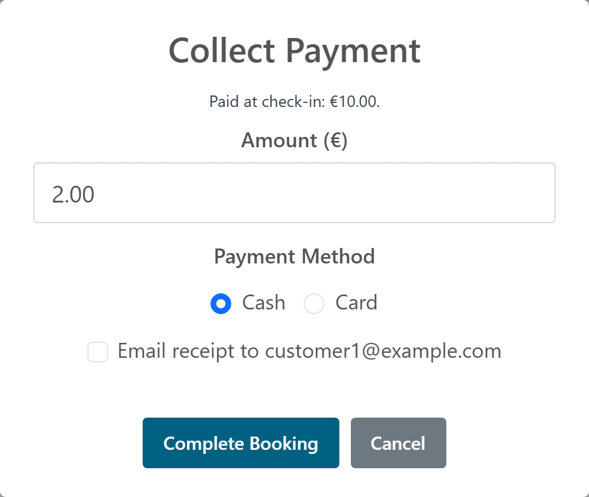
Εικόνα 13: Είσπραξη υπολοίπου στο check-out
Επιλέξτε Cash ή Card και πατήστε Complete Booking.
Οδηγός: Το ποσό είναι κλειδωμένο στο ακριβές υπόλοιπο.
Διαχειριστής: Μπορεί να γράψει μικρότερο ποσό, αλλά πρέπει να επιβεβαιώσει ότι η διαφορά είναι έκπτωση. Στο check-out δεν υπάρχει «επόμενη φορά» — ή εισπράττεται όλο το ποσό ή δίνεται έκπτωση.
Αν η κράτηση είναι ήδη εξοφλημένη, εμφανίζεται απλή επιβεβαίωση «Booking is fully paid».
Αν ο πελάτης έχει πληρώσει περισσότερα (π.χ. αφαιρέθηκε υπηρεσία), εμφανίζεται «Refund due» με το ποσό που επιστρέφεται σε μετρητά.
Μετά την ολοκλήρωση, το σύστημα προσφέρει την εκτύπωση της απόδειξης (Print Receipt).
Check-out χωρίς στοιχεία επιστροφής (τιμή TBC)
Αν η κράτηση δημιουργήθηκε χωρίς ημερομηνία επιστροφής, το σύστημα ορίζει αυτόματα ως check-out την τρέχουσα ημερομηνία και ώρα και υπολογίζει την τιμή από την ημέρα άφιξης μέχρι σήμερα, με τους ίδιους κανόνες τιμολόγησης (τύπος πάρκινγκ, κλίμακα ημερών, πλύσιμο, παράδοση, έκπτωση πελάτη). Το παράθυρο είσπραξης το δείχνει με μπλε πλαίσιο:
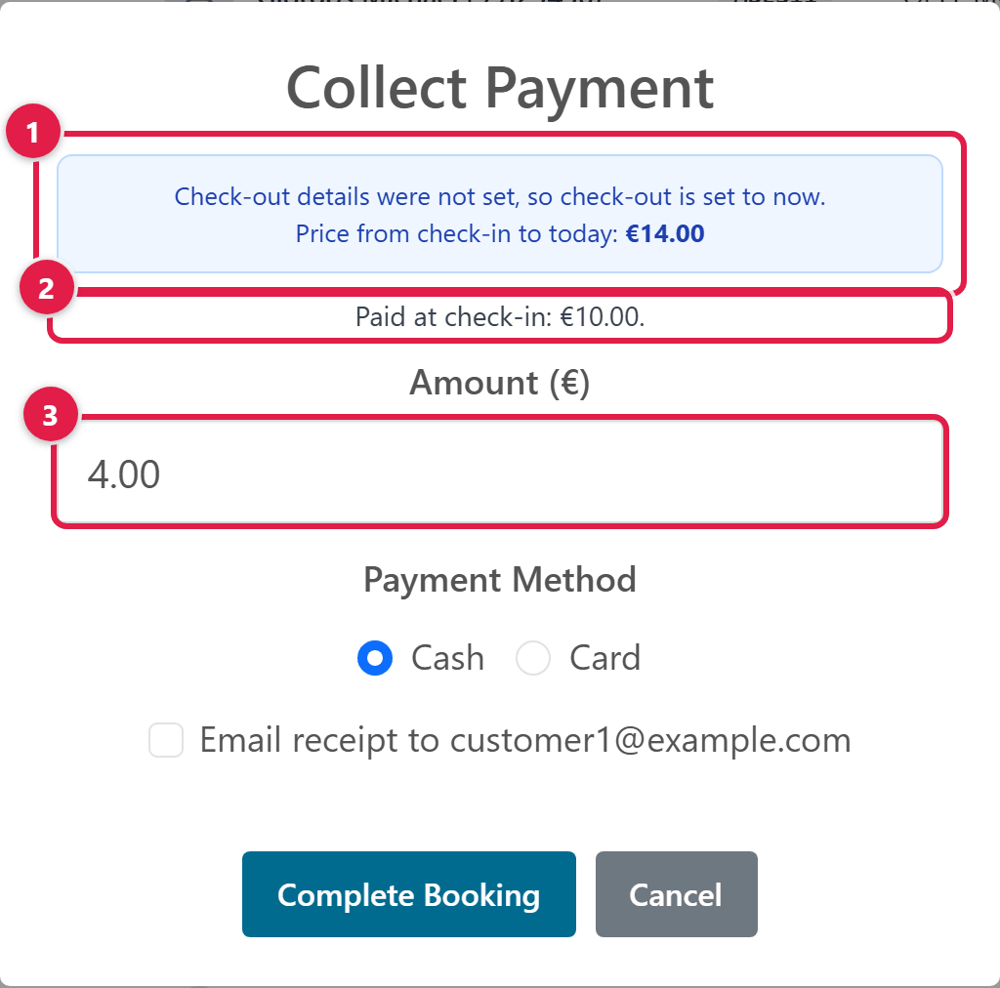
Εικόνα 14: Check-out κράτησης χωρίς στοιχεία επιστροφής
1Η υπολογισμένη τιμή από το check-in μέχρι σήμερα (εδώ €14.00 για 3 ημέρες).
2Ό,τι έχει ήδη πληρωθεί (εδώ €10.00 στο check-in).
3Το υπόλοιπο προς είσπραξη (€4.00), με τους ίδιους κανόνες όπως κάθε check-out.
Σημείωση Σε αυτή την περίπτωση δεν υπάρχει επιπλέον χρέωση καθυστέρησης, αφού η ημερομηνία επιστροφής ορίζεται εκείνη τη στιγμή. Η κράτηση αποθηκεύεται με την ημερομηνία, την ώρα και την τελική τιμή.
Προσοχή Αν η τιμή δεν μπορεί να υπολογιστεί (π.χ. η κράτηση δεν έχει τύπο πάρκινγκ ή δεν έχει οριστεί τιμή στις ρυθμίσεις), το σύστημα δεν επιτρέπει την ολοκλήρωση και εμφανίζει μήνυμα «Cannot Complete Booking». Διορθώστε την κράτηση ή τις ρυθμίσεις και προσπαθήστε ξανά.
Επαναφορά σε «Created»
Αν έγινε check-in κατά λάθος, επιλέξτε Parked ▾ → Revert to Created. Το σύστημα ζητά επιβεβαίωση, γιατί χάνονται τα στοιχεία check-in (θέση στάθμευσης, χιλιόμετρα, κλειδιά, σχόλια).
Ενέργειες ανά κράτηση
Το μενού ⋮ στην αρχή κάθε γραμμής δείχνει μόνο τις ενέργειες που ισχύουν για τη συγκεκριμένη κράτηση:
Εικόνα 15: Το μενού ενεργειών μιας παρκαρισμένης κράτησης
Edit: Επεξεργασία της κράτησης (όχι για ολοκληρωμένες).
Edit Note: Προσθήκη ή αλλαγή σημείωσης στάθμευσης. Η σημείωση φαίνεται από το εικονίδιο σημειώσεων στη λίστα.
Booking Tag: Η ετικέτα με τα βασικά στοιχεία που δίνεται στον πελάτη (δεν εμφανίζεται για κρατήσεις «Created»).
Check-in Receipt: Η απόδειξη παράδοσης του οχήματος.
Check-in Payment / Checkout Payment / Pre-paid Receipt: Οι αποδείξεις πληρωμής (στο check-in, στο check-out, online).
Download …: Λήψη των αποδείξεων πληρωμής σε PDF.
Delete: Διαγραφή — μόνο όσο η κράτηση είναι «Created».
Εκτύπωση ή email;
Για κάθε έγγραφο (ετικέτα, απόδειξη) το σύστημα ρωτά πώς θέλετε να το δώσετε στον πελάτη:
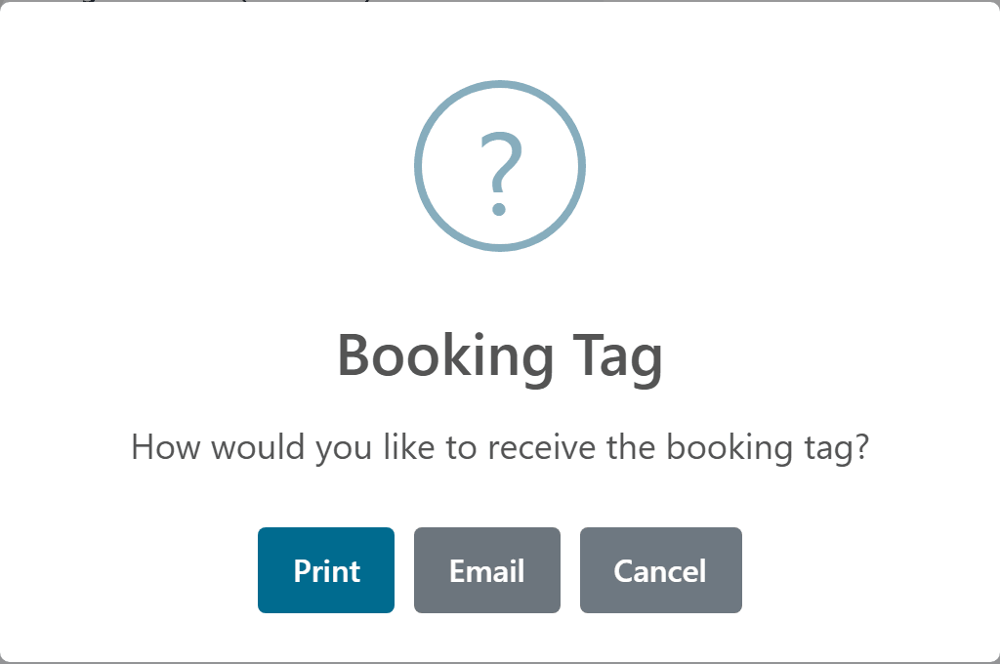
Εικόνα 16: Επιλογή τρόπου αποστολής
Print: Εκτύπωση στον θερμικό εκτυπωτή Zebra.
Email: Ανοίγει πεδίο με το email του πελάτη συμπληρωμένο (μπορείτε να το αλλάξετε) και πατάτε Send.
Σημείωση κράτησης
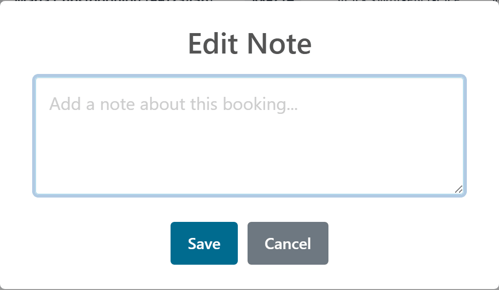
Εικόνα 17: Επεξεργασία σημείωσης
Δημιουργία & επεξεργασία κράτησης από το προσωπικό
Με το Add Booking ανοίγει η ίδια φόρμα που χρησιμοποιεί και ο πελάτης, με επιπλέον δυνατότητες για το προσωπικό:
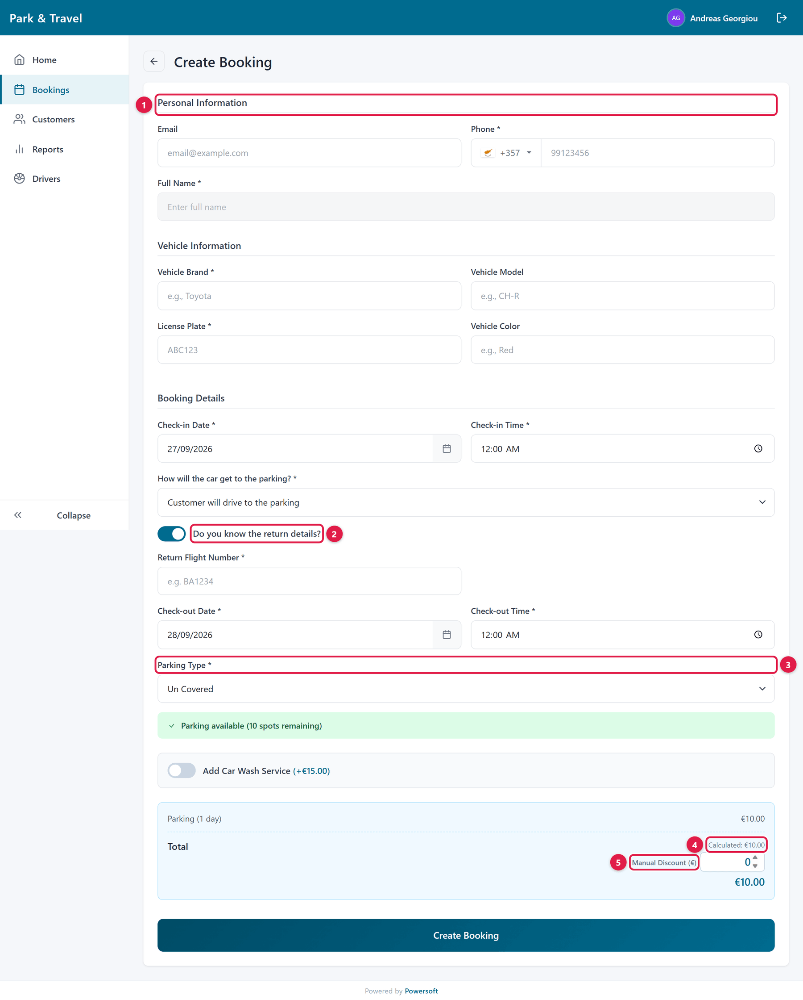
Εικόνα 18: Δημιουργία κράτησης από διαχειριστή
1Personal Information — αναζήτηση πελάτη: Γράφοντας το email ή το τηλέφωνο υπάρχοντος πελάτη, το ονοματεπώνυμο και τα οχήματά του συμπληρώνονται αυτόματα.
2Στοιχεία επιστροφής: Ο διακόπτης ξεκινά ενεργός ή ανενεργός ανάλογα με τη ρύθμιση «Return Details».
3Τύπος πάρκινγκ: Προεπιλέγεται ο τύπος που όρισε ο διαχειριστής στις ρυθμίσεις, με ένδειξη διαθεσιμότητας.
4Σύνοψη τιμής: Υπολογισμένη τιμή (Calculated) και τελικό σύνολο.
5Manual Discount (€)admin: Ο διαχειριστής μπορεί να αφαιρέσει συγκεκριμένο ποσό από την υπολογισμένη τιμή για τη συγκεκριμένη κράτηση.
Έκπτωση πελάτη: Αν ο πελάτης έχει ποσοστό έκπτωσης (Κεφάλαιο 10), εφαρμόζεται αυτόματα και φαίνεται η τιμή πριν και μετά την έκπτωση.
Επεξεργασία: Από ⋮ → Edit. Σε παρκαρισμένη κράτηση μπορείτε να αλλάξετε θέση, πλύσιμο και να προσθέσετε στοιχεία επιστροφής· η τιμή υπολογίζεται ξανά αυτόματα.
Διαφορά τιμής: Αν κατά την επεξεργασία η τιμή αυξηθεί και η προπληρωμή είναι υποχρεωτική, ο πελάτης πληρώνει μόνο τη διαφορά.
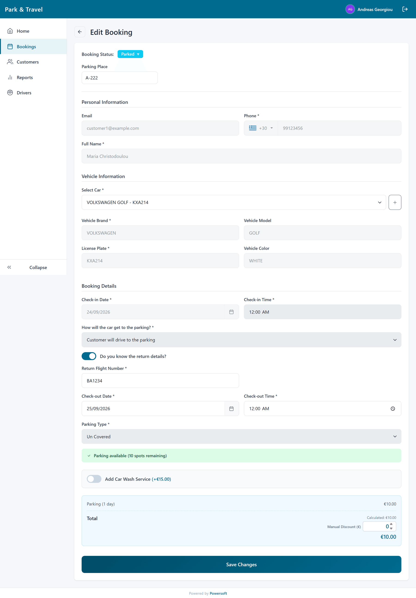
Εικόνα 19: Επεξεργασία παρκαρισμένης κράτησης
5. Εκτυπώσεις & Εκτυπωτής Zebra admindriver
Ο χώρος χρησιμοποιεί φορητό θερμικό εκτυπωτή Zebra ZQ521 για ετικέτες και αποδείξεις.
Τι χρειάζεται να είναι εγκατεστημένο
Στη συσκευή (tablet/υπολογιστή) πρέπει να τρέχει το πρόγραμμα Zebra Browser Print. Χωρίς αυτό καμία εκτύπωση δεν λειτουργεί, ακόμα κι αν ο εκτυπωτής είναι αναμμένος και συνδεδεμένος.
Τι μπορεί να τυπωθεί
Έγγραφο
Πότε / από πού
Booking Tag
Ετικέτα με τα βασικά στοιχεία της κράτησης και τα χιλιόμετρα. Από το μενού ⋮.
Check-in Receipt
Απόδειξη παράδοσης οχήματος, μετά το check-in ή από το μενού ⋮.
Απόδειξη πληρωμής check-in
Μετά την είσπραξη στο check-in ή από το μενού ⋮.
Απόδειξη πληρωμής check-out
Μετά την ολοκλήρωση της κράτησης ή από το μενού ⋮.
Τα συνολικά ποσά του κλεισίματος ταμείου, από το κουμπί Print της Αναφοράς Z (Κεφάλαιο 7).
Όλες οι αποδείξεις ξανατυπώνονται ή στέλνονται με email οποιαδήποτε στιγμή, από το μενού ενεργειών της κράτησης. Κατά την εκτύπωση εμφανίζεται ένδειξη προόδου· αν αποτύχει, εμφανίζεται μήνυμα με την αιτία.
Ζεύξη & αντιμετώπιση προβλημάτων
Η ζεύξη του εκτυπωτή με τη συσκευή γίνεται μία φορά, μέσω Bluetooth.
Προσοχή Αν μια εκτύπωση αποτύχει, ελέγξτε με τη σειρά:
Τρέχει το Zebra Browser Print στη συσκευή; (μήνυμα «Zebra Browser Print is not running»)
Είναι ο εκτυπωτής ανοιχτός και φορτισμένος;
Βλέπει το Zebra Browser Print τον εκτυπωτή; (μήνυμα «No Zebra printer found»). Κρατήστε πατημένο το κουμπί Feed του εκτυπωτή ώστε να εντοπιστεί ξανά μέσω Bluetooth.
Αν η εκτύπωση βγαίνει κομμένη ή αλλοιωμένη, ελέγξτε την μπαταρία και το χαρτί.
6. Βάρδιες Προσωπικού & Αποσύνδεση admindriver
Το σύστημα παρακολουθεί αυτόματα τις βάρδιες διαχειριστών και οδηγών. Η βάρδια είναι η «ταμειακή μηχανή» του υπαλλήλου: κάθε είσπραξη καταγράφεται στη βάρδια εκείνου που την έκανε.
Άνοιγμα βάρδιας: Γίνεται αυτόματα μόλις ο υπάλληλος μπει στην εφαρμογή. Αν έχει ήδη ανοιχτή βάρδια (π.χ. από προηγούμενη σύνδεση), συνεχίζει την ίδια. Δεν χρειάζεται καμία ενέργεια.
Κλείσιμο βάρδιας: Γίνεται μόνο από τον ίδιο τον υπάλληλο, με το Close Shift & Log Out κατά την αποσύνδεση.
Το παράθυρο αποσύνδεσης
Πατώντας το εικονίδιο αποσύνδεσης (πάνω δεξιά), εμφανίζεται η Shift Summary: όλες οι συναλλαγές της βάρδιας και τα σύνολα ανά τρόπο πληρωμής.
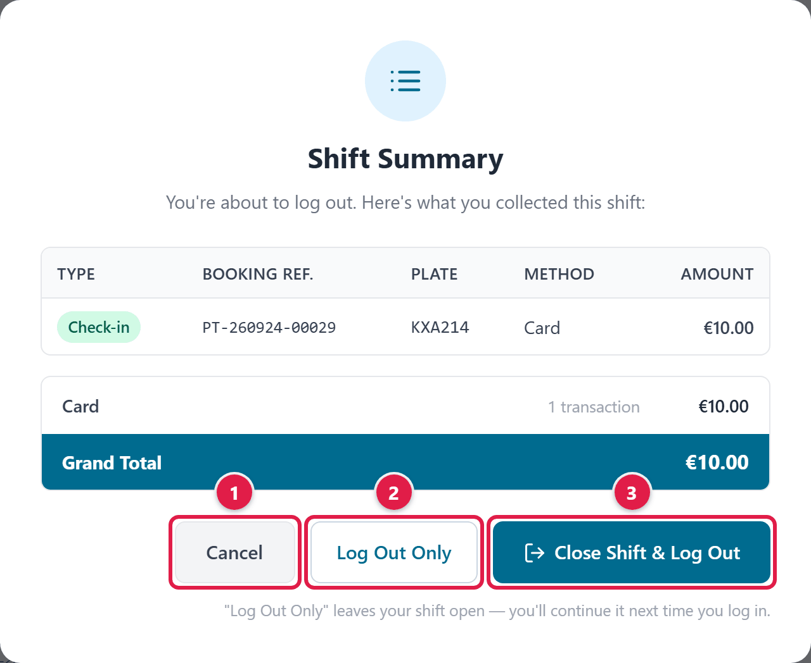
Εικόνα 20: Η σύνοψη βάρδιας κατά την αποσύνδεση
1Cancel: Επιστροφή στην εφαρμογή, χωρίς αποσύνδεση.
2Log Out Only: Αποσύνδεση χωρίς κλείσιμο βάρδιας. Η βάρδια μένει ανοιχτή και συνεχίζεται στην επόμενη σύνδεση (π.χ. σύντομο διάλειμμα).
3Close Shift & Log Out: Τυπώνεται η σύνοψη βάρδιας στον Zebra, κλείνει η βάρδια και γίνεται αποσύνδεση.
Προσοχή Στο Close Shift & Log Out, αν η βάρδια έχει συναλλαγές, η εκτύπωση της σύνοψης είναι υποχρεωτική. Αν η εκτύπωση αποτύχει, η βάρδια δεν κλείνει και εμφανίζεται μήνυμα. Διορθώστε τον εκτυπωτή (Κεφάλαιο 5) και δοκιμάστε ξανά, ή πατήστε «Log Out Only» και κλείστε τη βάρδια αργότερα.
Σημείωση Γιατί είναι σημαντικό να κλείνει η βάρδια; Η Αναφορά Z περιλαμβάνει μόνο συναλλαγές από κλειστές βάρδιες. Όσο μια βάρδια μένει ανοιχτή, οι εισπράξεις της φαίνονται στην Αναφορά X, αλλά περιμένουν για την επόμενη Αναφορά Z.
7. Αναφορές X & Z — Ταμείο
Αναφορά X (X-Report) admindriver
Η Αναφορά X είναι ζωντανή εικόνα του ταμείου των ανοιχτών βαρδιών. Δεν κλείνει και δεν αλλάζει τίποτα· μπορεί να ανοιχτεί οποιαδήποτε στιγμή, όσες φορές χρειαστεί, από το κουμπί X Report της σελίδας Bookings.
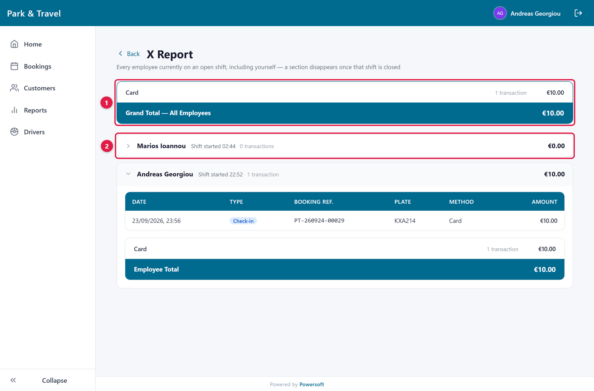
Εικόνα 21: Αναφορά X — προβολή διαχειριστή
1Σύνολα όλων: Τα ποσά ανά τρόπο πληρωμής και το γενικό σύνολο όλων των ανοιχτών βαρδιών.
2Ανά υπάλληλο: Μία ενότητα για κάθε υπάλληλο με ανοιχτή βάρδια (ώρα έναρξης, πλήθος συναλλαγών, σύνολο). Πατώντας την ανοίγει η λίστα συναλλαγών του.
Διαχειριστής: Βλέπει όλους τους υπαλλήλους με ανοιχτή βάρδια (και τον εαυτό του). Πρώτη εμφανίζεται η παλαιότερη βάρδια, ώστε να φαίνεται αμέσως αν κάποιος ξέχασε να κλείσει βάρδια.
Οδηγός: Βλέπει μόνο τη δική του τρέχουσα βάρδια.
Μόλις μια βάρδια κλείσει, η ενότητά της φεύγει από την Αναφορά X.
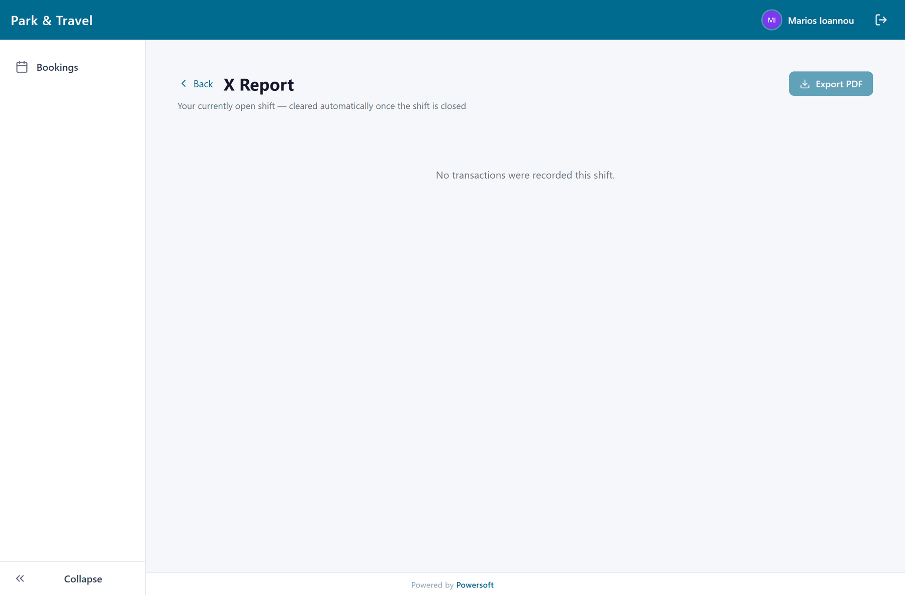
Εικόνα 22: Αναφορά X — προβολή οδηγού
Αναφορά Z — Κλείσιμο Ταμείου admin
Η Αναφορά Z είναι το οριστικό κλείσιμο ταμείου. Με ένα πάτημα συγκεντρώνει όλες τις συναλλαγές check-in και check-out που:
ανήκουν σε κλειστές βάρδιες (οποιουδήποτε υπαλλήλου), και
δεν έχουν συμπεριληφθεί ακόμα σε προηγούμενη Αναφορά Z.
Δεν χρειάζεται επιλογή υπαλλήλου ούτε καταχώρηση δηλωμένων ποσών: η συμφωνία μετρητών γίνεται ήδη ανά βάρδια, με την εκτυπωμένη σύνοψη στο κλείσιμο της βάρδιας.
Βήματα
Βεβαιωθείτε ότι οι υπάλληλοι έχουν κλείσει τις βάρδιές τους (ελέγξτε την Αναφορά X — όσοι εμφανίζονται εκεί έχουν ακόμα ανοιχτή βάρδια).
Από τη σελίδα Bookings πατήστε Z Report.
Διαβάστε το μήνυμα επιβεβαίωσης και πατήστε Confirm & Create.
Εμφανίζεται η Αναφορά Z που μόλις δημιουργήθηκε. Τυπώστε τη (Print) ή εξάγετέ τη σε PDF.
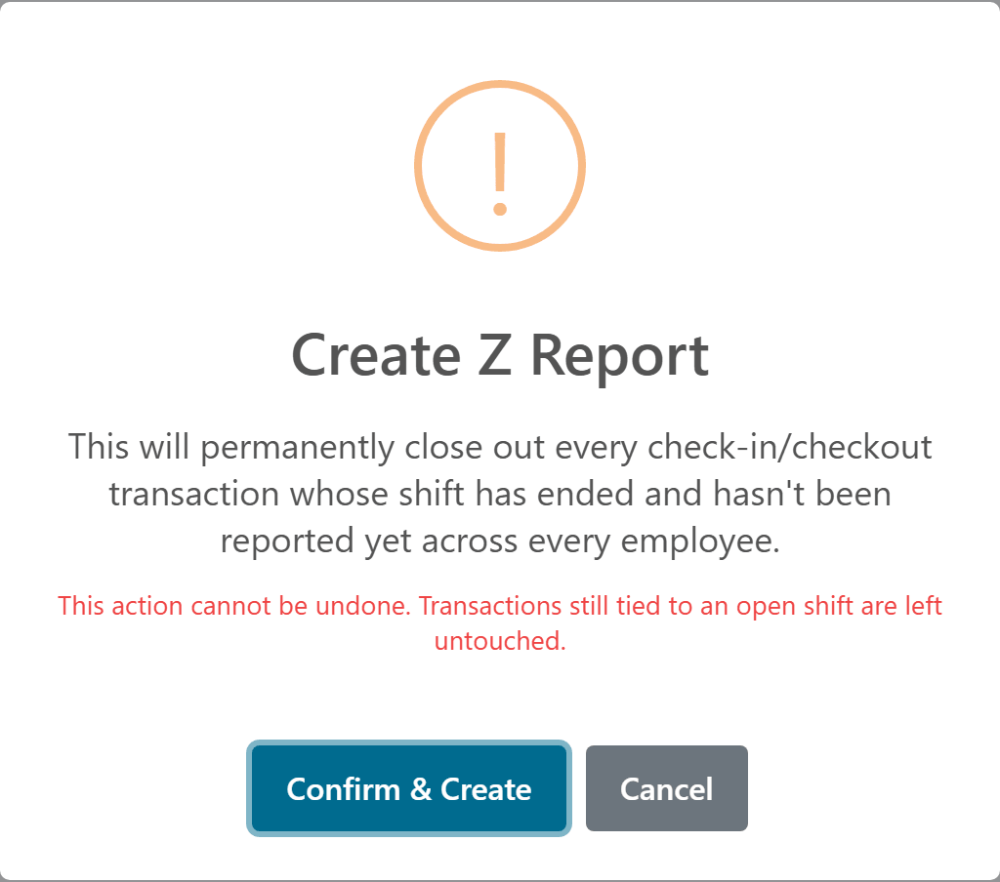
Εικόνα 23: Επιβεβαίωση δημιουργίας Αναφοράς Z
Προσοχή Η δημιουργία Αναφοράς Z δεν αναιρείται. Οι συναλλαγές που περιλαμβάνει σημειώνονται οριστικά ως «αναφερμένες» και δεν θα εμφανιστούν σε άλλη Αναφορά Z. Αν δεν υπάρχουν συναλλαγές από κλειστές βάρδιες, η αναφορά δεν δημιουργείται και εμφανίζεται σχετικό μήνυμα.
Τι δείχνει η Αναφορά Z
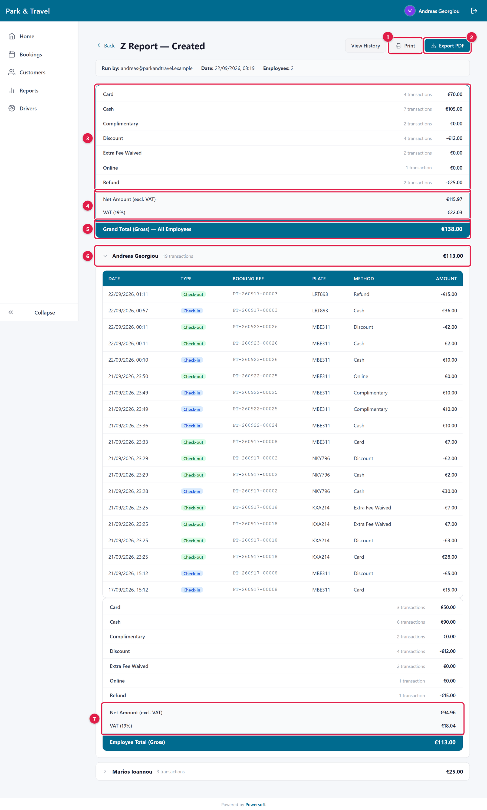
Εικόνα 24: Η Αναφορά Z μετά τη δημιουργία της
1Print: Εκτύπωση στον Zebra. Η εκτύπωση περιέχει μόνο τα γενικά σύνολα: ανάλυση ανά τρόπο πληρωμής, Καθαρό, ΦΠΑ και Μικτό σύνολο — όχι ανά υπάλληλο ή συναλλαγή.
2Export PDF: Πλήρης αναφορά σε PDF, με όλες τις συναλλαγές.
3Ανάλυση ανά τρόπο πληρωμής για όλους τους υπαλλήλους (Card, Cash, Discount, Refund κ.λπ.), με πλήθος συναλλαγών και ποσό.
4Καθαρό ποσό (Net) και ΦΠΑ (VAT) του γενικού συνόλου.
5Grand Total (Gross): Το μικτό γενικό σύνολο όλων των υπαλλήλων.
6Ενότητα υπαλλήλου: Πατώντας την ανοίγουν οι συναλλαγές του υπαλλήλου και η δική του ανάλυση.
7Καθαρό και ΦΠΑ του υπαλλήλου, πάνω από το «Employee Total (Gross)».
Καθαρό ποσό, ΦΠΑ και Μικτό
Όλα τα ποσά του συστήματος είναι με ΦΠΑ (μικτά). Η Αναφορά Z υπολογίζει:
Καθαρό(Net) = Μικτό ÷ (1 + ΦΠΑ%). Π.χ. με ΦΠΑ 19%: €138.00 ÷ 1.19 = €115.97.
ΦΠΑ(VAT) = Μικτό − Καθαρό = €22.03.
Το γενικό Καθαρό και ΦΠΑ είναι το άθροισμα των αντίστοιχων ποσών των υπαλλήλων, ώστε η αναφορά να «κλείνει» πάντα ακριβώς.
ΣημείωσηΟ συντελεστής ΦΠΑ «παγώνει» σε κάθε Αναφορά Z. Τη στιγμή της δημιουργίας, αποθηκεύεται στην αναφορά ο συντελεστής που ισχύει εκείνη την ημέρα (Ρυθμίσεις → Tax). Αν αργότερα αλλάξει ο ΦΠΑ, αφορά μόνο τις νέες Αναφορές Z — οι παλιές εμφανίζονται και τυπώνονται πάντα με τον δικό τους συντελεστή.
Ιστορικό Αναφορών Z admin
Από Reports → Z Reports βλέπετε όλα τα προηγούμενα κλεισίματα, με φίλτρο εύρους ημερομηνιών: ποιος τα έκανε, πότε, πόσους υπαλλήλους και συναλλαγές περιλαμβάνουν και το μικτό σύνολο.
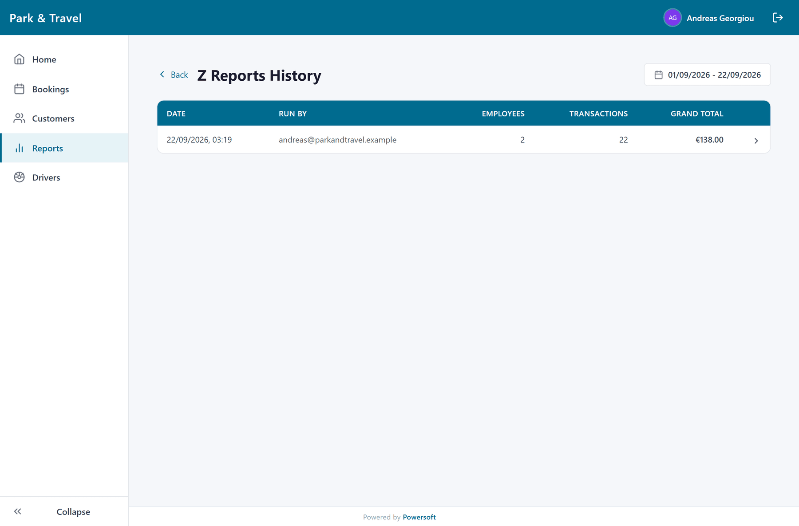
Εικόνα 25: Ιστορικό Αναφορών Z
Πατώντας μια αναφορά ανοίγει η πλήρης εικόνα της, με δυνατότητα Print (επανεκτύπωση στον Zebra) και Export σε PDF ή Excel.
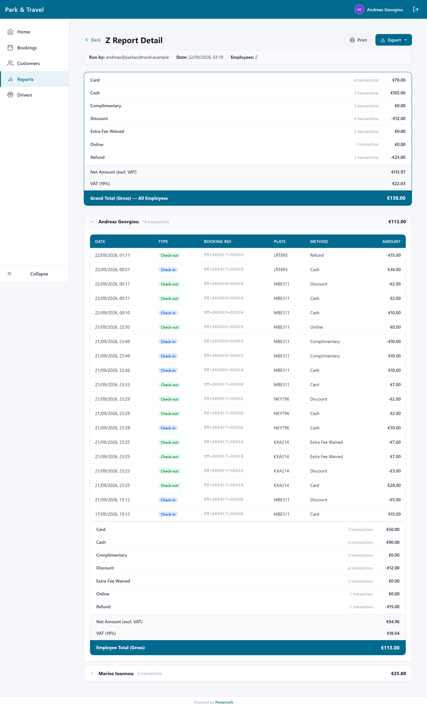
Εικόνα 26: Λεπτομέρειες προηγούμενης Αναφοράς Z
8. Πίνακας Ελέγχου (Dashboard) admin
Το Dashboard (Home) είναι η πρώτη οθόνη του διαχειριστή: μια γρήγορη εικόνα για το τι συμβαίνει στον χώρο, χωρίς αναζήτηση σε λίστες.
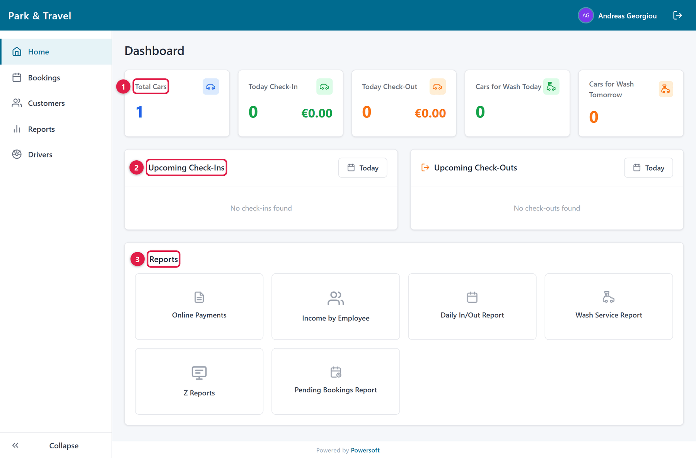
Εικόνα 27: Ο Πίνακας Ελέγχου
1Κάρτες δεικτών: Σύνολο οχημάτων στον χώρο, check-in σήμερα (πλήθος & ποσό), check-out σήμερα (πλήθος & ποσό), οχήματα για πλύσιμο σήμερα και αύριο.
2Upcoming Check-Ins / Check-Outs: Οι επόμενες αφίξεις και αναχωρήσεις, με επιλογή εύρους ημερομηνιών (εξ ορισμού, σήμερα).
3Reports: Συντομεύσεις προς κάθε αναφορά (Κεφάλαιο 9).
Πατώντας οποιαδήποτε κάρτα ανοίγει αναλυτική λίστα με τις κρατήσεις πίσω από τον αριθμό, με αναζήτηση, ταξινόμηση και σελιδοποίηση:
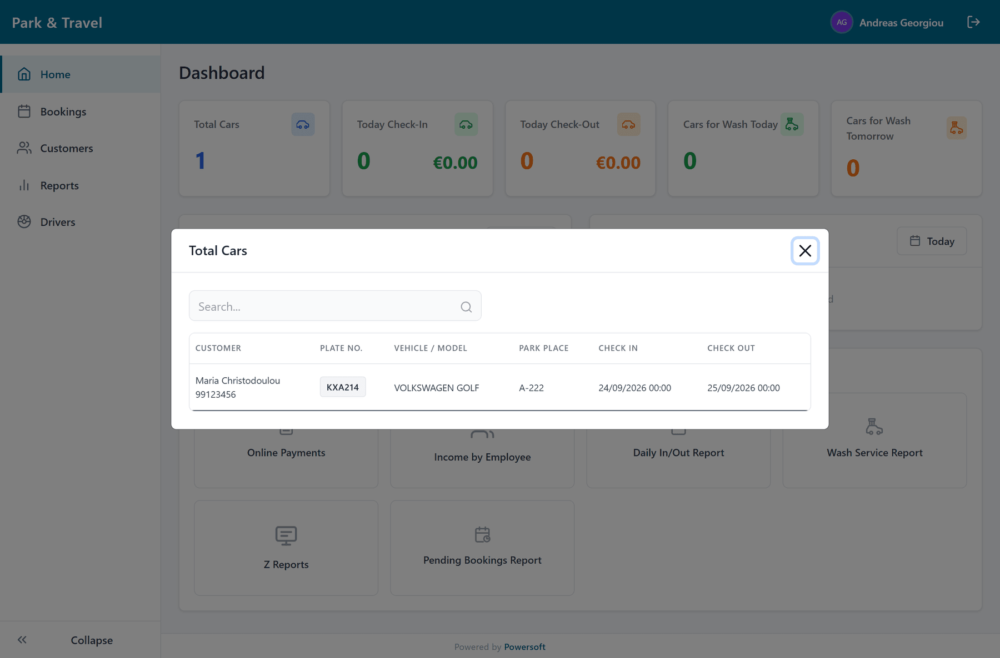
Εικόνα 28: Αναλυτική λίστα από κάρτα του Dashboard
9. Αναφορές admin
Η ενότητα Reports συγκεντρώνει όλες τις αναφορές. Οι περισσότερες εξάγονται σε PDF και Excel.
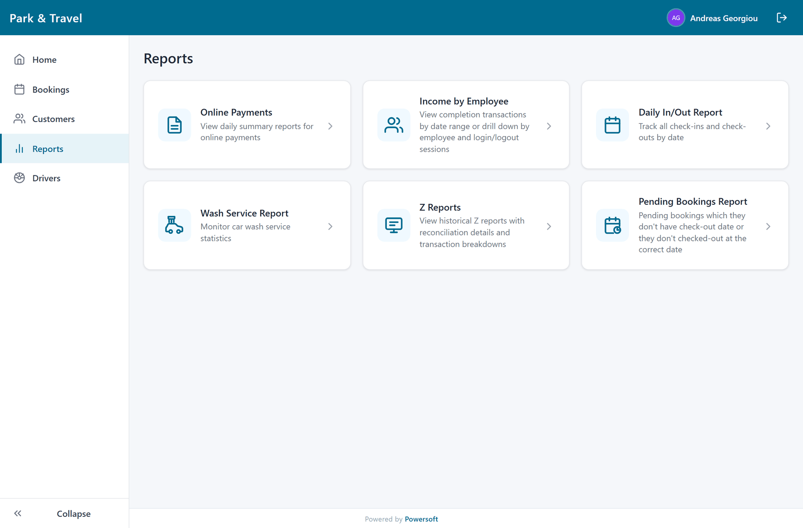
Εικόνα 29: Η σελίδα αναφορών
Online Payments
Όλες οι πληρωμές που έγιναν online μέσω VPayments (Wallee), για επιλεγμένο εύρος ημερομηνιών. Τα σύνολα υπολογίζονται μικτά και καθαρά (χωρίς ΦΠΑ).
Income by Employee — Έσοδα ανά Υπάλληλο
Οι εισπράξεις του προσωπικού (check-in και check-out), με δύο τρόπους προβολής:
Search by Date: Όλες οι συναλλαγές όλων των υπαλλήλων σε μια περίοδο, με σύνολα ανά τρόπο πληρωμής.
Search by Employee: Επιλέγετε υπάλληλο, βλέπετε τις βάρδιές του (έναρξη, λήξη, αν είναι ανοιχτή ή κλειστή) και ανοίγοντας μια βάρδια τις ακριβείς συναλλαγές της.
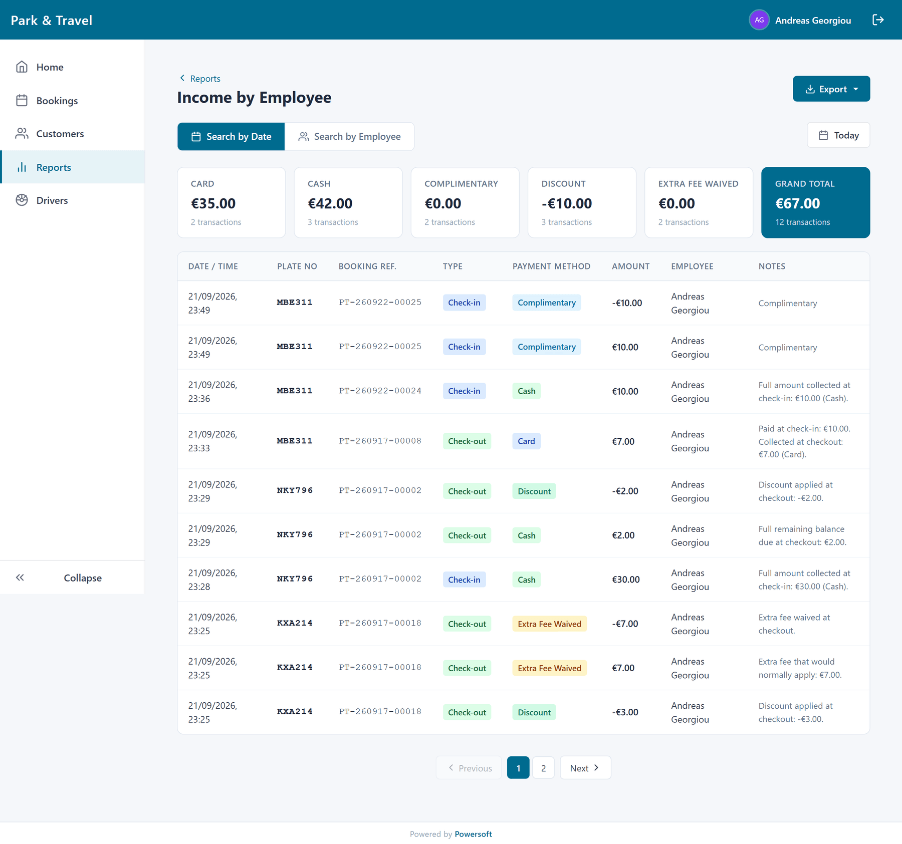
Εικόνα 30: Έσοδα ανά υπάλληλο — προβολή ανά ημερομηνία
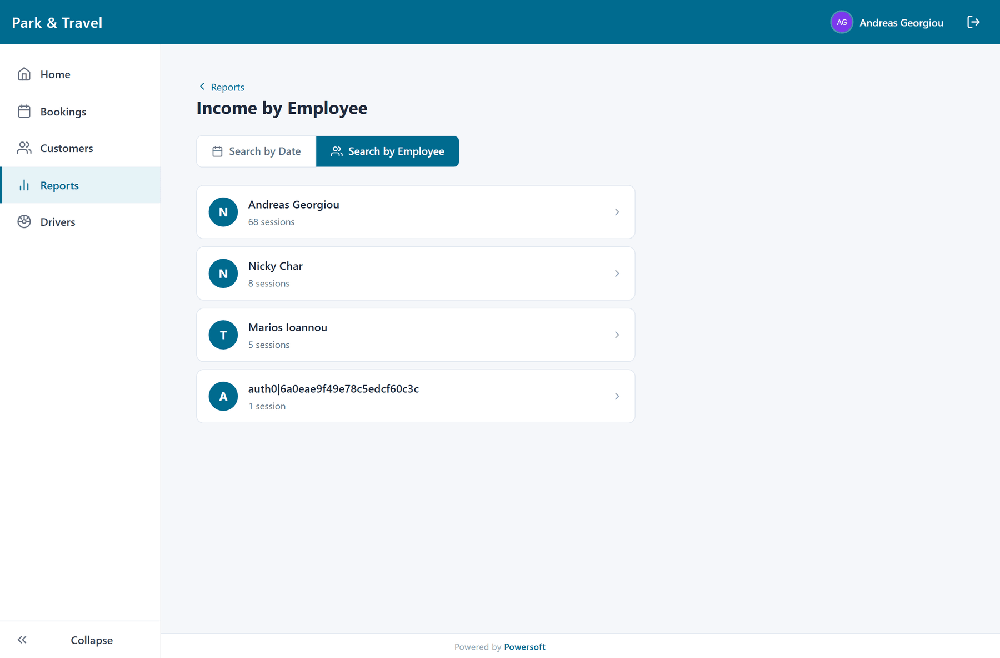
Εικόνα 31: Έσοδα ανά υπάλληλο — επιλογή υπαλλήλου
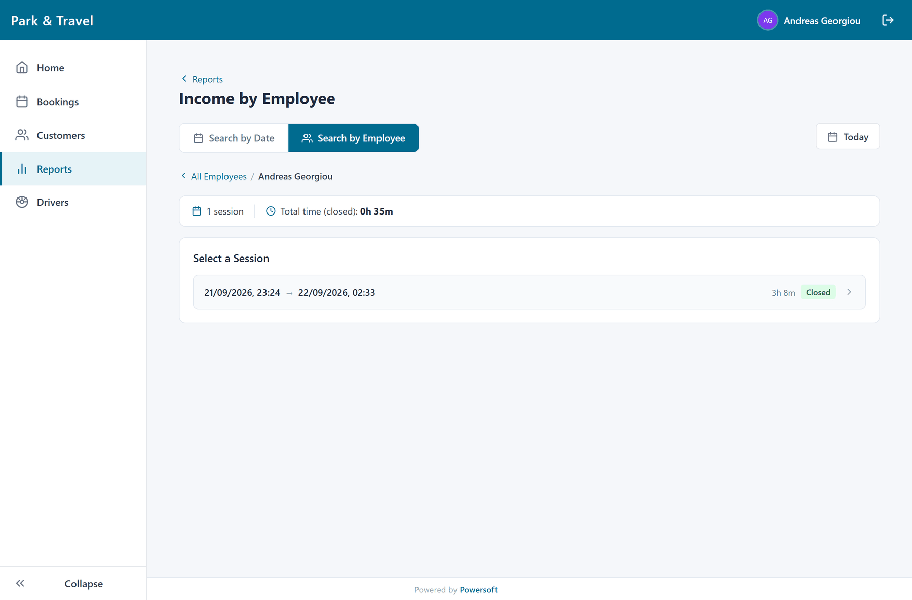
Εικόνα 32: Οι βάρδιες ενός υπαλλήλου
Daily In/Out Report — Ημερήσιες Είσοδοι/Έξοδοι
Όλες οι προγραμματισμένες αφίξεις ή/και αναχωρήσεις μιας ημέρας — το «πρόγραμμα» της βάρδιας. Επιλέγετε Check-Ins, Check-Outs ή Both και την ημερομηνία.
Για κάθε κράτηση φαίνονται: κατάσταση, τύπος (P = ο πελάτης φέρνει το όχημα στο πάρκινγκ, Airport = παράδοση/παραλαβή στο αεροδρόμιο), ώρα, πτήση, πελάτης και τηλέφωνο, όχημα, πινακίδα, θέση στάθμευσης, κλειδιά, τιμή και επιβάτες.
Όπου εφαρμόστηκε επιπλέον χρέωση καθυστέρησης, η αρχική τιμή φαίνεται διαγραμμένη και δίπλα, με κόκκινο, το σύνολο μαζί με τη χρέωση.
Με το Export εξάγεται σε PDF ή Excel για εκτύπωση.
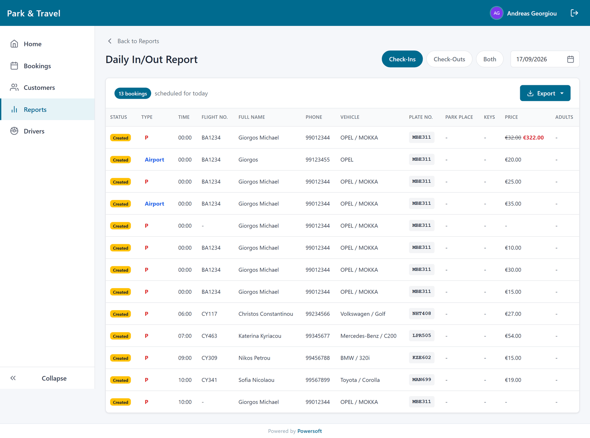
Εικόνα 33: Ημερήσια αναφορά εισόδων/εξόδων
Wash Service Report — Αναφορά Πλυσίματος
Οι κρατήσεις με υπηρεσία πλυσίματος σε ένα εύρος ημερομηνιών, μαζί με τη θέση στάθμευσης κάθε οχήματος, ώστε ο υπεύθυνος πλυσίματος να το εντοπίζει αμέσως.
Pending Bookings Report — Εκκρεμείς Κρατήσεις
Τα παρκαρισμένα οχήματα που χρειάζονται προσοχή: δεν έχουν ημερομηνία επιστροφής ή η ημερομηνία επιστροφής τους έχει ήδη περάσει. Με το τηλέφωνο του πελάτη δίπλα, ώστε να επικοινωνήσετε μαζί του.
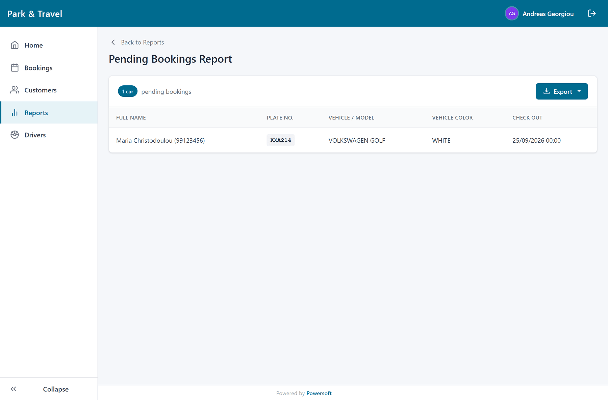
Εικόνα 34: Αναφορά εκκρεμών κρατήσεων
Z Reports
Το ιστορικό των Αναφορών Z — βλ. Κεφάλαιο 7.
10. Πελάτες admin
Η λίστα όλων των εγγεγραμμένων πελατών, με φίλτρα και ταξινόμηση. Για κάθε πελάτη υπάρχουν δύο ενέργειες:
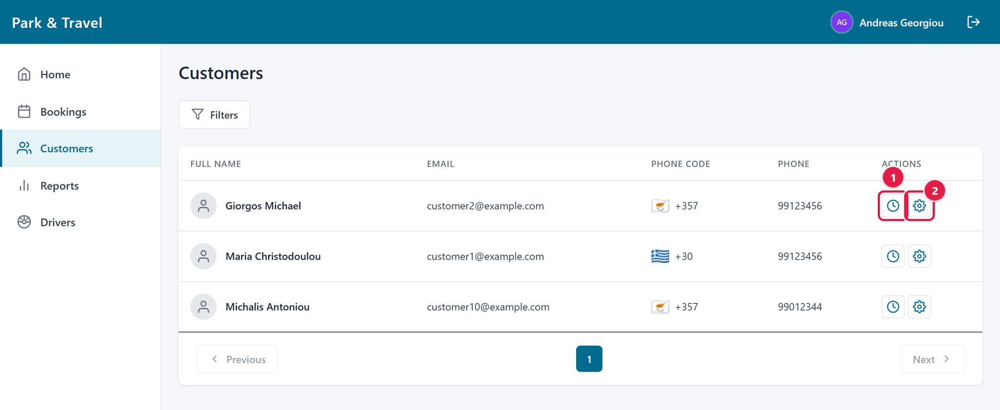
Εικόνα 35: Η λίστα πελατών
1Ιστορικό (εικονίδιο ρολογιού): Όλες οι κρατήσεις του πελάτη, με αναζήτηση και σελιδοποίηση.
2Ρυθμίσεις (εικονίδιο γραναζιού): Έκπτωση και εξαίρεση από υποχρεωτικές πληρωμές.
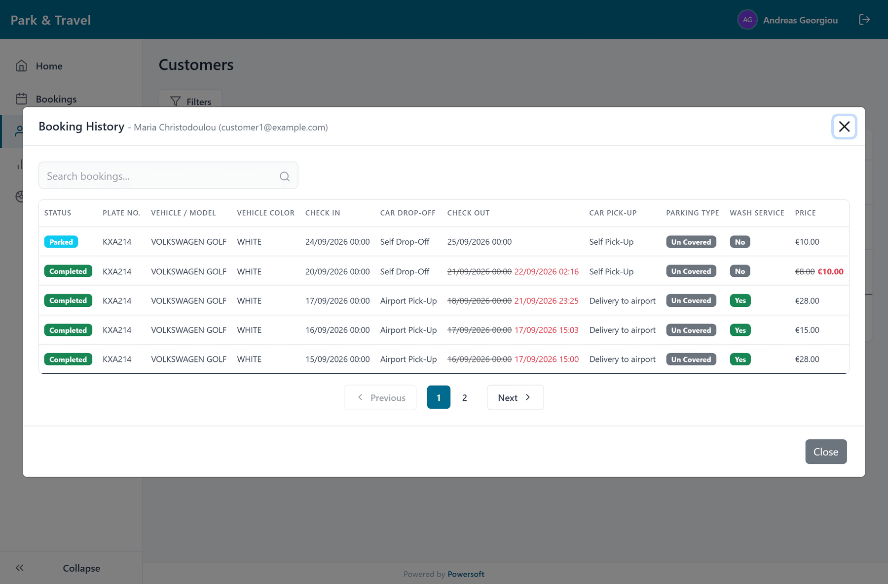
Εικόνα 36: Ιστορικό κρατήσεων πελάτη
Ρυθμίσεις πελάτη
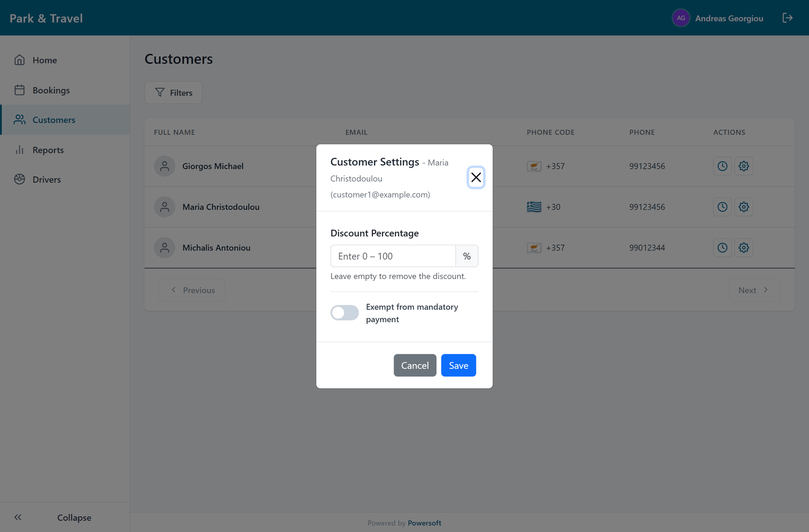
Εικόνα 37: Ρυθμίσεις πελάτη
Ποσοστό έκπτωσης (0–100%): Εφαρμόζεται αυτόματα σε κάθε νέα κράτηση του πελάτη. Κενό = καμία έκπτωση.
Εξαίρεση από υποχρεωτική πληρωμή: Απαλλάσσει τον συγκεκριμένο πελάτη από την υποχρεωτική προπληρωμή και την υποχρεωτική πληρωμή στο check-in, ακόμα κι αν ισχύουν για όλους τους άλλους.
11. Οδηγοί admin
Η διαχείριση των λογαριασμών του προσωπικού με ρόλο «Οδηγός».
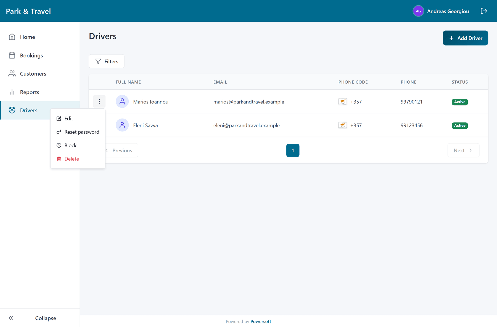
Εικόνα 38: Η λίστα οδηγών με το μενού ενεργειών ανοιχτό
Προσθήκη οδηγού
Με το Add Driver συμπληρώνετε όνομα, επώνυμο, email (δεν αλλάζει μετά τη δημιουργία), αριθμό ταυτότητας, διεύθυνση (προαιρετικά) και τηλέφωνο. Ο νέος οδηγός λαμβάνει αυτόματα email για να ορίσει τον δικό του κωδικό πρόσβασης.
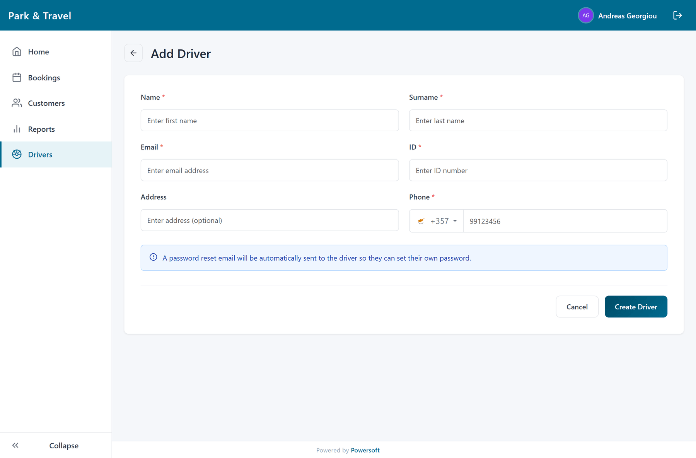
Εικόνα 39: Φόρμα νέου οδηγού
Ενέργειες οδηγού
Edit: Αλλαγή στοιχείων.
Reset Password: Αποστολή email στον οδηγό για νέο κωδικό (μόνο για ενεργούς οδηγούς). Χρήσιμο όταν κάποιος ξεχάσει τον κωδικό του.
Block / Unblock: Προσωρινή απενεργοποίηση του λογαριασμού, χωρίς να χαθεί το ιστορικό. Αναιρείται οποιαδήποτε στιγμή.
Delete: Οριστική διαγραφή. Προτιμήστε το Block, εκτός αν είστε βέβαιοι ότι ο λογαριασμός δεν θα χρειαστεί ξανά.
12. Ρυθμίσεις Συστήματος admin
Οι ρυθμίσεις βρίσκονται στη σελίδα προφίλ του διαχειριστή (πάνω δεξιά, στο όνομά σας), στη στήλη Settings. Εδώ ορίζεται όλη η επιχειρηματική λογική: τιμές, διαθεσιμότητα, ΦΠΑ και πληρωμές. Οι αλλαγές ισχύουν μόλις πατήσετε Save Settings.
Εικόνα 41: Ρυθμίσεις (2/3): λήξη ημέρας, ελάχιστος χρόνος κράτησης, πλύσιμο και παράδοση
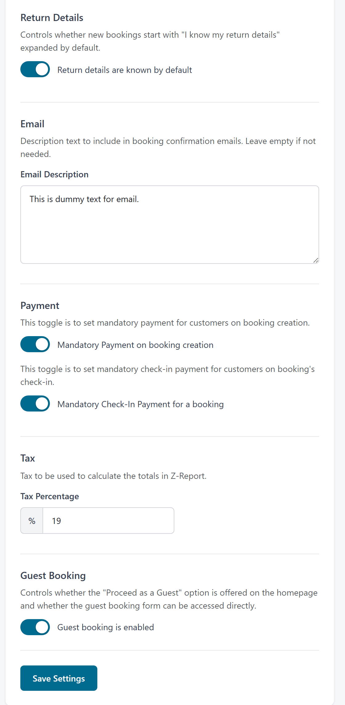
Εικόνα 42: Ρυθμίσεις (3/3): στοιχεία επιστροφής, email, πληρωμές, ΦΠΑ και κράτηση επισκέπτη
Ρύθμιση
Τι κάνει
Available Parking Spaces
Ο συνολικός αριθμός θέσεων, χωριστά για ακάλυπτο και καλυμμένο. Τροφοδοτεί τον έλεγχο διαθεσιμότητας των κρατήσεων.
Default Parking Type
Ο τύπος πάρκινγκ που είναι προεπιλεγμένος σε κάθε νέα κράτηση. Αν δεν έχει διαθέσιμες θέσεις, προτείνεται αυτόματα ο άλλος.
Pricing
Η βασική τιμή της πρώτης ημέρας, για κάθε τύπο πάρκινγκ.
Price Increments
Η προοδευτική κλίμακα: κάθε επόμενη ημέρα προσθέτει το ποσό της γραμμής της (φαίνεται δίπλα το σωρευτικό σύνολο). Η τελευταία προσαύξηση επαναλαμβάνεται για όλες τις επόμενες ημέρες. Το «Copy from Covered/Uncovered» αντιγράφει την κλίμακα από τον άλλο τύπο. Η ίδια κλίμακα χρησιμοποιείται για την επιπλέον χρέωση καθυστέρησης.
Day End
Σε πόσα λεπτά μετά τα μεσάνυχτα «κλείνει» η ημέρα για σκοπούς χρέωσης (π.χ. 120 = 02:00).
Booking Lead Time
Πόσες ημέρες νωρίτερα πρέπει να γίνει μια κράτηση (0 = επιτρέπεται και αυθημερόν).
Car Wash Service
Ενεργοποίηση της υπηρεσίας πλυσίματος και η τιμή της.
Airport Delivery / Delivery Fee
Ενεργοποίηση της παράδοσης/παραλαβής στο αεροδρόμιο και η χρέωσή της.
Return Details
Αν οι νέες κρατήσεις ξεκινούν με τον διακόπτη «Do you know the return details?» ενεργό ή ανενεργό.
Email
Κείμενο που προστίθεται σε κάθε email επιβεβαίωσης κράτησης.
Payment
Δύο ανεξάρτητοι διακόπτες: υποχρεωτική πληρωμή κατά τη δημιουργία κράτησης και υποχρεωτική πληρωμή στο check-in (δεσμεύει τους οδηγούς).
Tax
Ο συντελεστής ΦΠΑ (%) για τον υπολογισμό Καθαρού/ΦΠΑ στις Αναφορές Z και στα Online Payments. Κάθε Αναφορά Z κρατά τον συντελεστή της ημέρας δημιουργίας της — η αλλαγή εδώ αφορά μόνο νέες αναφορές.
Guest Booking
Αν η επιλογή «Proceed as a Guest» εμφανίζεται στην αρχική σελίδα και αν η φόρμα επισκέπτη είναι προσβάσιμη.
13. Συχνές Ερωτήσεις & Προβλήματα
Η εκτύπωση δεν βγαίνει. Τι κάνω;
Ακολουθήστε τον έλεγχο του Κεφαλαίου 5: Zebra Browser Print ανοιχτό, εκτυπωτής αναμμένος και φορτισμένος, εντοπισμός μέσω Bluetooth (κουμπί Feed). Εναλλακτικά, στείλτε την απόδειξη με Email από το μενού ⋮ της κράτησης.
Δεν μπορώ να κλείσω τη βάρδια μου, γιατί αποτυγχάνει η εκτύπωση.
Η βάρδια κλείνει μόνο με επιτυχημένη εκτύπωση της σύνοψης. Πατήστε Log Out Only (η βάρδια μένει ανοιχτή), διορθώστε τον εκτυπωτή και στην επόμενη σύνδεση κάντε Close Shift & Log Out.
Μια είσπραξη δεν εμφανίζεται στην Αναφορά Z.
Η βάρδια του υπαλλήλου που την έκανε είναι ακόμα ανοιχτή. Ελέγξτε την Αναφορά X: όσοι εμφανίζονται εκεί πρέπει να κάνουν «Close Shift & Log Out». Η είσπραξη θα μπει στην επόμενη Αναφορά Z.
Έκανα Αναφορά Z κατά λάθος. Αναιρείται;
Όχι. Η Αναφορά Z είναι οριστική. Οι συναλλαγές της δεν θα ξαναεμφανιστούν σε άλλη Αναφορά Z.
Άλλαξε ο ΦΠΑ. Τι γίνεται με τις παλιές Αναφορές Z;
Τίποτα. Κάθε Αναφορά Z κρατά τον συντελεστή που ίσχυε όταν δημιουργήθηκε. Ο νέος συντελεστής ισχύει μόνο για νέες αναφορές.
Ο πελάτης δεν ήξερε πότε επιστρέφει. Πόσο πληρώνει;
Στο check-out, το σύστημα ορίζει ως ημερομηνία επιστροφής τη σημερινή και υπολογίζει αυτόματα την τιμή από την άφιξη μέχρι σήμερα. Βλ. Κεφάλαιο 4, «Check-out χωρίς στοιχεία επιστροφής».
Ως οδηγός, δεν μπορώ να αλλάξω το ποσό είσπραξης.
Σωστά — οι οδηγοί εισπράττουν πάντα το ακριβές υπόλοιπο. Εκπτώσεις, δωρεάν (complimentary) και χάρισμα επιπλέον χρέωσης γίνονται μόνο από διαχειριστή.
Έκανα check-in σε λάθος κράτηση.
Επιλέξτε Parked ▾ → Revert to Created στη λάθος κράτηση. Τα στοιχεία check-in (θέση, χιλιόμετρα κ.λπ.) διαγράφονται και η κράτηση επιστρέφει σε «Created».
Ο πελάτης έχασε την απόδειξή του.
Από το μενού ⋮ της κράτησης, επιλέξτε την απόδειξη και Print ή Email. Ο εγγεγραμμένος πελάτης μπορεί επίσης να την κατεβάσει μόνος του από τις κρατήσεις του.
Δεν μπορώ να διαγράψω μια κράτηση.
Η διαγραφή επιτρέπεται μόνο όσο η κράτηση είναι «Created». Αν έχει γίνει check-in, κάντε πρώτα «Revert to Created».
Ένας οδηγός ξέχασε τον κωδικό του.
Ο διαχειριστής, από Drivers → ⋮ → Reset Password, του στέλνει email για νέο κωδικό.